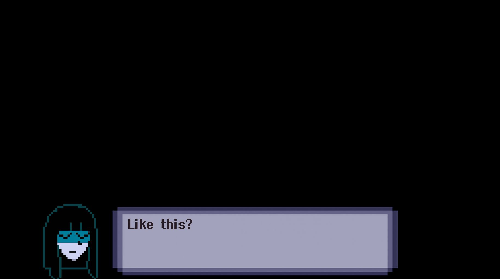

Therapy with Dr. Krueger is an interactive story game. While the dialog is predetermined,
we do have the option to make selections during the testing modes. You get to play as
Taylor, a 19-year-old college student who has been selected to be Dr. Krueger’s latest
patient, in what he calls ‘Dream Therapy’. Dr. Kuegar who has a degree in Marine
Biology, seems to be ill equipped to be a therapist. None the less he will be treating
Taylor at a family run mental facility.Taylor is subject to several weird tests, some of
which include human body parts. Taylor is being tested on basic math and her listening
skills. Will Taylor survive the strange testing?
Characters
Unfortunately, it is character locked and we can only control Taylor. The only real
control we have over Taylor is choosing test answers. For example, there are inkblot
tests and we get to decide what we see in the inkblot. As the basic dialog is
predetermined so we just click to continue. Even later in the game when we get a
chance to ask the doctor questions, it is still preselected dialog. So, the game
kind of plays as a graphic novel.
Dr. Albert Krueger. The anatagonist. Interviewing Taylor. "Albert is a sadistic
murderer, as shown through his demeanor throughout the game. He is shown to be an
incredibly off-putting and suspicious man. Despite living in G2 his whole life,
Krueger attended post-secondary education in the G4 District, studying Marine
Biology at RMU"
"Taylor Lee is a rather vulgar and informal, sometimes monotonous, person, as seen
throughout the story; they speak very informally in comparison to Krueger,
occasionally cursing. They are shown to be a very curious person."
This is our very first look at the Doctor. Taylor has just become
conscious. It is unclear how she ended up with Doctor Kueger. She is just as
confused as we are. After brief introductions, the doctor tells Taylor they will
be doing a series of test. The first of the testing. Answering basic math questions. Getting them
right the Doctor just tells you, you did a great job. However, when answering
wrong the Doctor doesn't get mad. He will sometimes say "oh so close" or "not
quite" Nothing seems to change when you answer multiple in a row wrong. You do
get to reanswer if you answer wrong the first time. During the test, one of the
cards becomes covered in blood. The doctor quickly replaces it with a new card.
When Taylor asks what happened, he ignores her and continues with more math
questions. The inkblot test is by far the hardest of the testing. All of the
images are super abstract. They don't seem to look like any of the answer
choices. The answer choices are the same on all of the images. You are allowed
to flip the ink images over, but the doctor asks you why and you are asked to
turn them over. Halfway through the testing, while hovering over the answer
choices they start to change. The now flashing answer choices say words in pink
lettering such as "murder" and "blood". This is clearly freaking Taylor out and
she asks what's going on. Again the doctor just ignores her. This was the final test. Seemed like some kind of trust test. As the
doctor asks Taylor to close her eyes. We the player can control if Taylor opens
her eyes or keeps them closed. This is the section where Taylor finally gets to
ask the doctor questions. We find out that this is a family business. And the
doctor has a degree in marine biology. We also discover that Taylor and the
doctor are both from a place called G2. They both attended the same college
there. We don't get any further explanation of what or where G2 is in relation
to where they are now. If we open Taylor's eyes, the doctor asks if we are okay,
and then we close our eyes again. Opening Taylor's eyes multiple times still has
the same reaction from the doctor. While our eyes are closed we hear screams in
the background. The doctor tells Taylor the next test is a simple ball and cup test.
Which Taylor is okay, saying she has played before. Going into the test she
seems fine. Then the doctor reveals that the ball they are actually using is an
eyeball. Which the doctor justifies because the patient has agreed to let them
use it. (yes, the eyeball blinks) The test starts off easy, he may only move the
cup once or twice. Gets faster. No, punishment for wrong answers.

What happened when she first closed her eyes. Just before the questions
start.The world inside the game is called G2. We learn that both Taylor and
Dr. Krueger are from G2 and went to similar colleges. The punishment for not listening to Dr. Krueger. Taylor is torn apart
by some type of androids. And prompts us to play again, but this time listening
to the Doctor more. Taylor also doesnt' technically die as she comments on her
torn apart state. There are apparently several endings. I just got the bad one.
So, while getting the test answers wrong doesn't negatively affect Taylor
instantly, it affects the overall game. At the very end of the game whether your ending is good or bad you get
to rate the experience. However, it doesn't really matter what you pick because
it is automatically changed to a postive ranking.
.JPG)